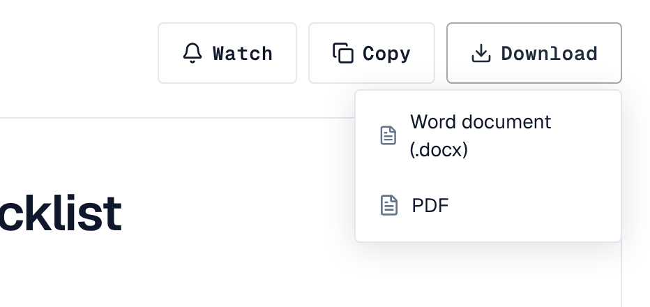
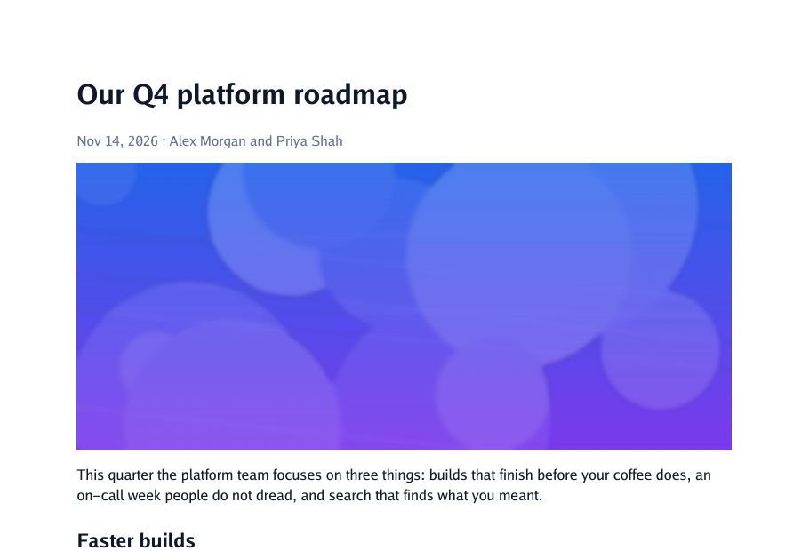
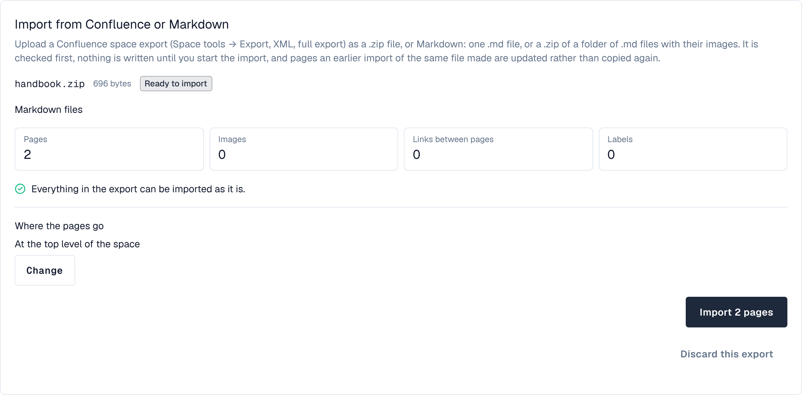
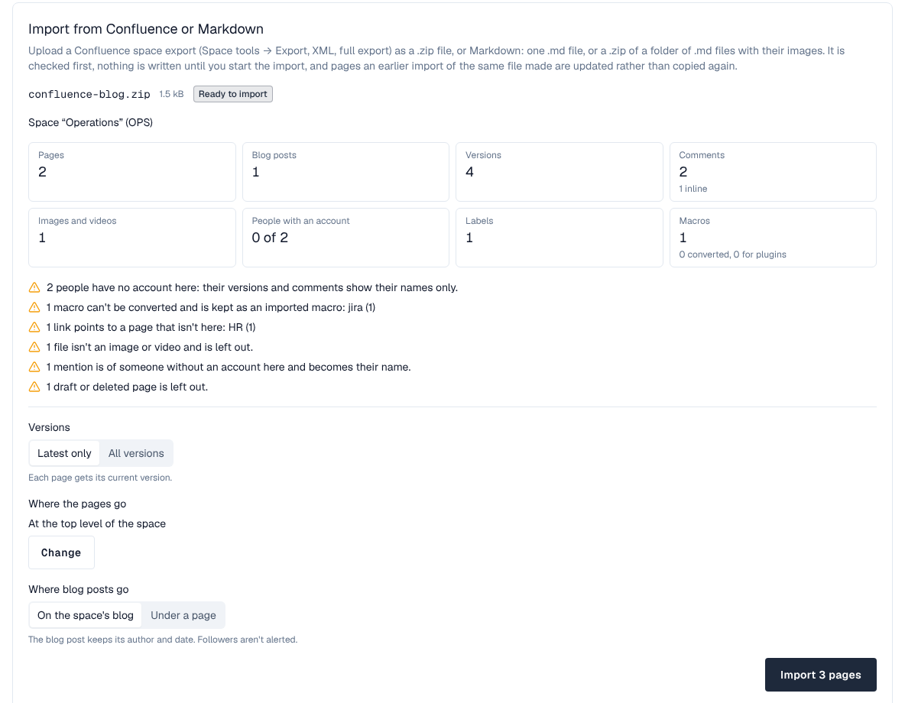
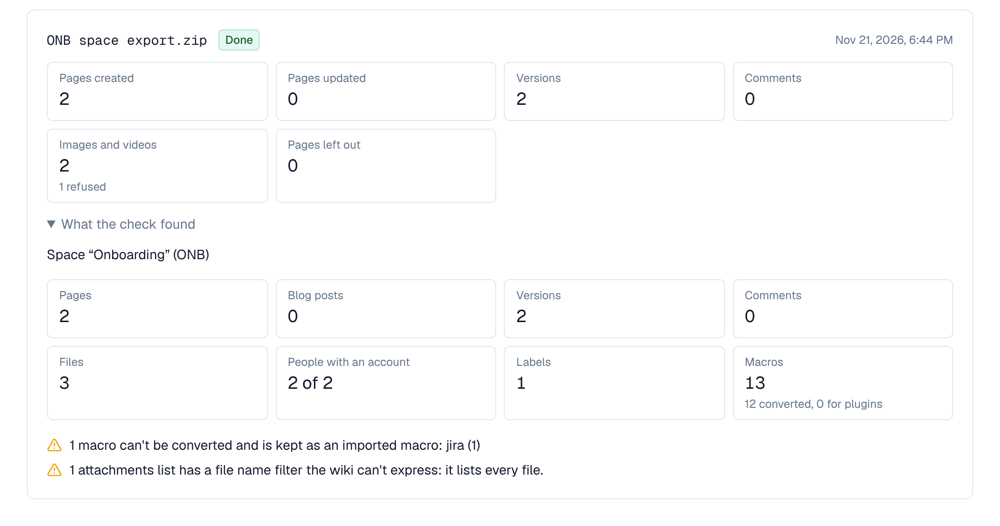

1. Download a page as Word or PDF
Download above a published page offers Word document (.docx) or PDF. In the editor it is in Page details once the page has a version. Anyone who can read the page can download it, readers who aren't signed in too.

- The file holds the published version you are looking at, never the draft: heading and figure numbers, tables of contents, lists, tables, code, boxes, images with captions, and the content of blocks that show other pages you may read.
- PNG, JPEG and GIF images are included; other images and videos become a note or a link.
- The Word file shows every language. The PDF draws Latin, Greek and Cyrillic text; other scripts and emoji don't show there yet, so use Word for them. Pages are A4.
- A very large page can take too long to turn into a file; try again later or download a smaller page. When many people export at once, the Wiki asks you to try again in a moment.
- A blog post's file starts with its title, its date and authors, and its cover image.
- File blocks print as a line with the file's name, kind and size, linked to the file; an attachments list as the files you may see (up to 100); a gallery as its images one under another (up to 24). A PDF shown in the page isn't drawn, only its line.
- Pages by label, Blog posts, Contributors, Change history and Task report blocks print as lines with their details, as you may see them; a link card as a box with its title, description, site and address. Dates are written in your language.

2. Import Markdown
A space's admins import Markdown on the Import tab of the space's settings: one .md file, or a .zip of a folder of .md files with their images.
- Each folder becomes a page holding its files' pages; a folder's index.md, README.md or _index.md is that page's text.
- A file's title comes from its front matter title, else its first top-level heading, else its name. A leading number (02-setup.md) sets the order and is left out of the title.
- Tables, task lists, strikethrough, links between the files and the images they show are kept. HTML inside the Markdown is left out.
- Importing the same folder again into the same space updates the pages it made, except pages edited here since.
The upload is checked first, and nothing is written until you start the import from its report. Each page gets one version.

- Open the space and select Space settings in its sidebar.
- Open the Import tab and select Choose file: a Confluence space export (.zip), one .md file, or a .zip of Markdown files.
- Wait while it uploads and is checked. Nothing is written to the space yet.
- Read the report. Choose Where the pages go (the top level, or under a page with Change), and for a Confluence export the Versions (all or the latest only) and where blog posts go.
- Select Import N pages. Cancel import stops it after the page it is writing; Discard this export drops a checked upload. Earlier imports lists what was imported before.
3. Import from Confluence
A Confluence space export (Space tools → Export, XML, full export, as a .zip) is imported the same way, with its page tree, versions, comments, labels, images and videos, and people matched by email. See Import from Confluence for the steps and what converts.
When the export has blog posts and the space's blog is on, the report asks Where blog posts go:
- On the space's blog (the default): each becomes a post on the Blog tab, dated when it was written in Confluence, with its authors where they have an account here. Followers aren't alerted about imported posts.
- Under a page: as before blogs came to the Wiki, the posts become pages under a page with the title you give.
With the space's blog off, blog posts always go under a page.

4. What the import report says
Before an import starts, its report counts what the export holds and what will change on the way. Besides pages, versions, comments and people, it can say:

| Line | Means |
|---|---|
| Files | The attachments that will be imported: images, videos, PDFs and any other file. |
| N files can't be attached here | Files with a blocked extension or larger than the largest file your administrator allows (Settings → Security → Attachments) are left out. |
| N files macros or links show are missing from the export | A macro or link names a file the export doesn't hold: it is kept as an imported macro or as text. |
| N attachments lists have file name filters the wiki can't express | The list shows every file of its page. Edit its File name filter after the import if needed. |
| N lists of pages or posts had filters the wiki doesn't have | An excluded label, a space that isn't in the Wiki, an author or a date range was dropped from a list of pages, of posts or of tasks: it may list more than in Confluence. |
Which macros become which blocks is listed in How Confluence macros are imported.
Imports are for the space's admins, and your administrator can turn them off or limit the upload size.